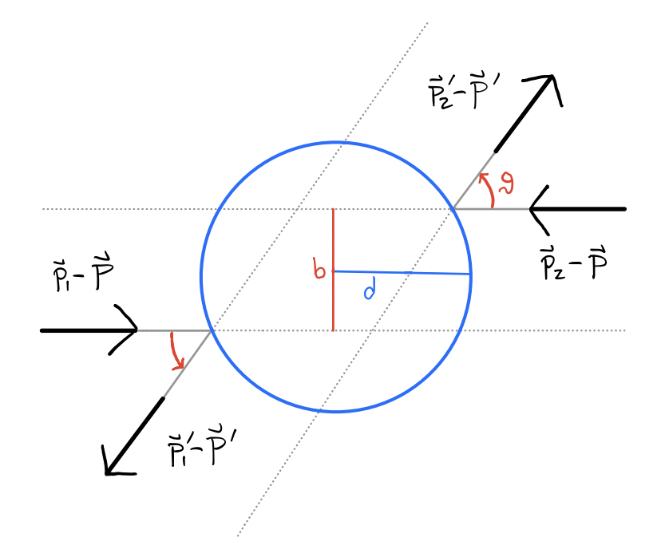

Kinetic Theory
Kinetic theory is the study of the macroscopic properties of large numbers of particles, starting from their classical equations of motion. Kinetic theory seeks to understand not only equilibrium, but the approach of systems towards equilibrium. Since classical particles must obey Newton’s Laws, we should in theory be able to study their dynamics by following all of their trajectories. Of course, this isn’t feasible in practice for a large number of interacting particles. We thus need to figure out how to go from the classical dynamics of microscopic particles to the thermodynamics of macroscopic systems. We’ll want to ask how we can define equilibrium for a system of moving particles, whether all systems actually do evolve towards an equilibrium state, and what the time evolution is when the system isn’t yet in equilibrium.
Because it’s the simplest interesting system to study with kinetic theory, and indeed one of the few we can even get anywhere with, we’ll focus in this lesson on the kinetic theory of the ideal gas, a gas of identical particles in a fixed container whose particles only interact kinetically. While much of this discussion holds true for any gas with appropriate generalizations, it will often exclude other forms of matter like solids or liquids. The microscopic dynamics of solids really requires a quantum mechanical treatment. The microscopic dynamics of liquids overlaps somewhat with the dynamics of gases, except unlike with gases, liquids tend to be incompressible and often have long-range interactions.
Hamiltonian Mechanics
To start, we’ll review the classical mechanics of particles via the Hamiltonian formulation.
Hamilton’s Equations
Consider a system with \(3N\) degrees of freedom. For simplicity, we’ll assume the generalized coordinates are just the ordinary position vectors \(\mathbf{x}_i\) and ordinary momentum vectors \(\mathbf{p}_i\) for a given particle \(i\). In that case, \(N\) represents the number of particles in the system. Let \(\mathbf{x} \equiv (\mathbf{x}_1,\mathbf{x}_2,\cdots,\mathbf{x}_N)\) and \(\mathbf{p} \equiv (\mathbf{p}_1,\mathbf{p}_2,\cdots,\mathbf{p}_N)\). The \(6N\)-dimensional vector \((\mathbf{x}, \mathbf{p})\) characterizes the state of the system. The state is also a point in an abstract \(6N\)-dimensional space, called the phase space of the system.
Assuming the system is conservative, the dynamics of the system are completely determined by the joint Hamiltonian \(H = H(\mathbf{x}, \mathbf{p})\). We can then in principle solve for the microscopic equations of motion \(\big(\mathbf{x}(t), \mathbf{p}(t)\big)\) by solving Hamilton’s equations, a system of \(6N\) differential equations given by \[ \boxed{\mathbf{\dot x} = \frac{\partial H}{\partial \mathbf{p}}, \quad \mathbf{\dot p} = -\frac{\partial H}{\partial \mathbf{x}}} \ . \] Said differently, the Hamiltonian induces a flow on the phase space, with the flow described by Hamilton’s equations. Each flow represents the time evolution of a particular state, determined by the initial conditions.
It’s important to note that the microscopic equations of motion are time reversal invariant. That is, if the momenta are reversed, \(\mathbf{p} \rightarrow -\mathbf{p}\), then the trajectories also reverse, \(\mathbf{x}(t) \rightarrow \mathbf{x}(-t)\). This is because the Hamiltonian \(H(\mathbf{x},\mathbf{p})\) is invariant to time reversal transformations \((\mathbf{x}, \mathbf{p}) \rightarrow (\mathbf{x}, -\mathbf{p})\). Why is this important to note? Because thermodynamics is not time reversal invariant. Once an isolated system is in equilibrium it will stay in equilibrium. We thus need to figure out how this time reversal invariance property gets lost in the thermodynamic limit.
Poisson Brackets
For two functions \(F(\mathbf{x}, \mathbf{p})\) and \(G(\mathbf{x}, \mathbf{p})\) defined on phase space, define their Poisson bracket by \[ \boxed{\{F, G\} \equiv \frac{\partial F}{\partial \mathbf{x}} \cdot \frac{\partial G}{\partial \mathbf{p}} - \frac{\partial G}{\partial \mathbf{x}} \cdot \frac{\partial F}{\partial \mathbf{p}}} \ . \] It’s easy to show that the Poisson bracket is anti-symmetric, i.e. \(\{F,G\} = -\{G,F\}\). It’s also bilinear, \[ \begin{align*} \{aF+bG,J\} &= a\{F,J\} + b\{G,J\}, \\ \{F, aG + bJ\} &= a\{F,G\} + b\{F,J\}. \\ \end{align*} \] The Poisson bracket also satisfies the product rule, \[ \frac{d}{dt} \{F,G\} = \bigg\{\frac{dF}{dt}, G\bigg\} + \bigg\{F, \frac{dG}{dt}\bigg\}. \] The total time derivative of any function \(F(\mathbf{x}, \mathbf{p})\) is given by its Poisson bracket with the Hamiltonian, \[ \frac{dF}{dt} = \{F, H\}. \] Evidently, if \(F\) is a conserved quantity, its Poisson bracket with \(H\) must vanish, i.e. \(\{F,H\} = 0\). By Taylor expanding, it’s also possible to show that the Poisson bracket of any function of \(F\) with \(H\) must vanish, i.e. that \(\{f(F), H\} = 0\) for any analytic function \(f(F)\).
One result that we’ll frequently use is that the integral of a Poisson bracket \(\{F,H\}\) vanishes when integrated over an unbounded region of phase space (which is almost always the case). Denote the \(3N\)-dimensional phase space volume element by \(d\Gamma \equiv d^{3N} \mathbf{x} \ d^{3N} \mathbf{p}\). Then we have \[ \int d\Gamma \ \{F,H\} = 0. \] To see why this is true we just use the definition of the Poisson bracket and integration by parts, \[ \begin{align*} \int d\Gamma \ \{F,H\} &= \int d\Gamma \ \bigg(\frac{\partial F}{\partial \mathbf{x}} \cdot \frac{\partial H}{\partial \mathbf{p}} - \frac{\partial H}{\partial \mathbf{x}} \cdot \frac{\partial F}{\partial \mathbf{p}}\bigg) \\ &= \int d\Gamma \ \frac{\partial H}{\partial \mathbf{p}} \cdot \frac{\partial F}{\partial \mathbf{x}} - \int d\Gamma \ \frac{\partial H}{\partial \mathbf{x}} \cdot \frac{\partial F}{\partial \mathbf{p}} \\ &= -\int d\Gamma \ \frac{\partial^2 H}{\partial \mathbf{x}\partial \mathbf{p}} F + \int d\Gamma \ \frac{\partial^2 H}{\partial \mathbf{p}\partial \mathbf{x}} F + (\text{boundary terms}). \\ \end{align*} \] Since second partials commute, the two integrals cancel each other. Since \(H\) is a Hamiltonian describing a physical system, it must go to zero as \(\mathbf{p}\) or \(\mathbf{x}\) go to infinity, which means the boundary terms must also vanish as well. Note that for this to be true it’s also important that both \(F\) and \(H\) depend on all of the integration variables. If not then some of the terms can’t be exchanged. For example, if \(F\) is constant, we can pull the entire integral inside the Poisson bracket to get \[ \int d\Gamma \ \{F,H\} = \bigg\{F, \int d\Gamma \ H\bigg\} \neq 0. \]
Liouville’s Equation
The Hamiltonian formulation of classical mechanics implies an important result called Liouville’s theorem, a statement about how phase space densities evolve in time. From this theorem we can derived Liouville’s equation, our starting point for kinetic theory.
Liouville’s Theorem
Suppose a system of \(N\) particles has some given thermodynamic macrostate \(M\), which will in general be a function of the thermodynamic variables \(T, V, N\), etc. The system will also have some microstate \(\mu\) that’s a function of all the positions \(\mathbf{x}\) and momenta \(\mathbf{p}\). In general, there will be many possible microstates \(\mu\) for any given macrostate \(M\). Each microstate corresponds to some point in the phase space, which evolves in time. Define a Gibbs ensemble as the set of all possible microstates \(\mu\) that correspond to a given macrostate \(M\). An ensemble represents a cloud of points in phase space, with the cloud of points each evolving in time. Suppose there are \(\mathcal{N}\) points in the ensemble. For a given infinitesimal phase space volume element \(d\Gamma\), we can define an ensemble density \(\rho\) as the limiting ratio of ensemble points inside of a cube \(d\Gamma\) with the total number of ensemble points \(\mathcal{N}\), \[ \boxed{\rho(\mathbf{x}, \mathbf{p}, t) d\Gamma \equiv \lim_{\mathcal{N} \rightarrow \infty} \frac{d\mathcal{N}}{\mathcal{N}}} \ . \] The phase space density defines a proper probability density on the phase space since \(\rho \geq 0\) and \[ \int d\Gamma \ \rho = \int \frac{d\mathcal{N}}{\mathcal{N}} = \frac{\mathcal{N}}{\mathcal{N}} = 1. \] We can define an ensemble average for any function \(F(\mathbf{x}, \mathbf{p},t)\) on the phase space, \[ \boxed{\langle F(\mathbf{x}, \mathbf{p},t) \rangle \equiv \int d\Gamma \ \rho(\mathbf{x}, \mathbf{p},t) F(\mathbf{x}, \mathbf{p},t)} \ . \] Liouville’s Theorem: Phase space volumes are preserved under time evolution. That is, for any two times \(t\) and \(t'\), the differential volume element \(d\Gamma\) must be the same, \[ d\Gamma(\mathbf{x}', \mathbf{p}',t') = d\Gamma(\mathbf{x}, \mathbf{p},t). \] Proof: Let \(d\Gamma \equiv d\Gamma(\mathbf{x}, \mathbf{p},t)\) and \(d\Gamma' \equiv d\Gamma(\mathbf{x}', \mathbf{p}',t+dt)\), where \(dt\) is infinitesimal. Then we must have \[ \begin{align*} \mathbf{x}' &= \mathbf{x} + \mathbf{\dot x} dt, \\ \mathbf{p}' &= \mathbf{p} + \mathbf{\dot p} dt. \\ \end{align*} \] The goal is to show that \(d\Gamma = d^{3N} \mathbf{x} \ d^{3N} \mathbf{p}\) is the same as \(d\Gamma' = d^{3N} \mathbf{x}' \ d^{3N} \mathbf{p}'\). Let’s focus on a particular component \(\alpha\) and show \(dx_\alpha dp_\alpha = dx'_{\alpha} dp'_{\alpha}\). Taking the differentials of \(x'_\alpha\) and \(p'_\alpha\), we have \[ \begin{align*} dx'_\alpha &= dx_\alpha + \frac{\partial \dot x_\alpha}{\partial x_\alpha} dt, \\ dp'_\alpha &= dp_\alpha + \frac{\partial \dot p_\alpha}{\partial p_\alpha} dt. \\ \end{align*} \] Then evidently \[ dx'_\alpha dp'_\alpha = dx_\alpha dp_\alpha \bigg[1 + \bigg(\frac{\partial \dot x_\alpha}{\partial x_\alpha} + \frac{\partial \dot p_\alpha}{\partial p_\alpha} \bigg) \bigg]. \] Using Hamilton’s equations, however, we have that \[ \frac{\partial \dot x_\alpha}{\partial x_\alpha} + \frac{\partial \dot p_\alpha}{\partial p_\alpha} = \frac{\partial}{\partial x_\alpha} \frac{\partial H}{\partial p_\alpha} - \frac{\partial}{\partial p_\alpha} \frac{\partial H}{\partial x_\alpha} = 0. \] Thus, to first order we have \(dx_\alpha dp_\alpha = dx'_{\alpha} dp'_{\alpha}\) for each \(\alpha\). Multiplying them all together, we finally have \(d\Gamma' = d\Gamma\), as desired. \(\text{Q.E.D.}\)
Derivation
Liouville’s theorem as stated is equivalent to saying that the phase space density is an incompressible fluid. That is, the flow velocity on phase space has zero divergence. Indeed, we have \[ \nabla_{\mathbf{x}, \mathbf{p}} \cdot (\mathbf{\dot x}, \mathbf{\dot p}) = \frac{\partial \mathbf{\dot x}}{\partial \mathbf{x}} + \frac{\partial \mathbf{\dot p}}{\partial \mathbf{p}} = \frac{\partial}{\partial \mathbf{x}} \frac{\partial H}{\partial \mathbf{p}} - \frac{\partial}{\partial \mathbf{p}} \frac{\partial H}{\partial \mathbf{x}} = 0. \] Define the stream derivative or the material derivative of a function \(f(\mathbf{x}, \mathbf{p},t)\) as the total time derivative, \[ \boxed{\frac{Df}{Dt} \equiv \frac{df}{dt}} \ . \] The stream derivative represents how any given flow of \(f\) changes in time. If you follow any given set of points in time, they’ll evolve according to the stream derivative. This contrasts with the point derivative \(\frac{\partial f}{\partial t}\), which represents how \(f\) changes at a fixed point \(\mathbf{x},\mathbf{p}\) in time.
The stream derivative of the phase space density can evidently be related to the point derivative by \[ \begin{align*} \frac{D\rho}{Dt} &= (\mathbf{\dot x}, \mathbf{\dot p}) \cdot \nabla_{\mathbf{x}, \mathbf{p}} \ \rho \ + \frac{\partial \rho}{\partial t} \\ &= \mathbf{\dot x} \cdot \frac{\partial \rho}{\partial \mathbf{x}} + \mathbf{\dot p} \cdot\frac{\partial \rho}{\partial \mathbf{p}} + \frac{\partial \rho}{\partial t} \\ &= \frac{\partial \rho}{\partial \mathbf{x}} \cdot \frac{\partial H}{\partial \mathbf{p}} - \frac{\partial \rho}{\partial \mathbf{p}} \cdot \frac{\partial H}{\partial \mathbf{x}} \\ &= \{\rho, H\} + \frac{\partial \rho}{\partial t}. \end{align*} \] Liouville’s theorem implies that the stream derivative of \(\rho\) must vanish. Since \(d\Gamma' = d\Gamma\), we must have \(\rho' d\Gamma' = \rho d\Gamma\), or \((\rho'-\rho) d\Gamma = 0\), which implies \(\rho'=\rho\). We’ve thus derived Liouville’s equation, which says how the density at any given point in phase space evolves in time, \[ \boxed{\frac{\partial \rho}{\partial t} = -\{\rho, H\} = \{H,\rho\}} \ . \] For convenience, it’s also common to define a Liouville operator \(\mathcal{L}\) by \[ \boxed{\mathcal{L}[\rho] \equiv \{\rho, H\} + \frac{\partial \rho}{\partial t}} \ . \] In this language, Liouville’s equation can also be written as \(\mathcal{L}[\rho] = 0\).
We can use Liouville’s equation to find the time derivative of an ensemble average. If \(F(\mathbf{x},\mathbf{p})\) is some time-independent function on phase space. Using integration by parts, we have \[ \frac{d}{dt} \langle F \rangle = \int d\Gamma \ F \frac{\partial \rho}{\partial t} = -\int d\Gamma \ F \ \{\rho, H\} = \int d\Gamma \ \rho \ \{F, H\} = \bigg\langle \frac{dF}{dt} \bigg\rangle. \] That is, the time derivative of an ensemble average is the ensemble average of the time derivative.
Equilibrium Conditions
While all this is nice, our entire purpose is to figure out what happens at or near equilibrium. At equilibrium, the density can’t depend explicitly on time, i.e. \(\rho_{eq} = \rho(\mathbf{x}, \mathbf{p})\). This evidently implies \[ \frac{\partial \rho_{eq}}{\partial t} = -\{\rho_{eq}, H\} = 0. \] A sufficient condition for \(\{\rho_{eq}, H\}\) to vanish is that \(\rho_{eq}\) only be an explicit function of the conserved quantities in the system, since conserved quantities all have vanishing Poisson bracket with \(H\). This is called the basic assumption of statistical mechanics. If only energy is conserved, which is the typical case, we’d have \[ \rho_{eq} = \rho(H(\mathbf{x}, \mathbf{p})). \] Recall that this requires the Poisson bracket to vanish since we can expand \(\rho\) in powers of \(H\). The two most important equilibrium densities we’ll see in statistical mechanics are the microcanonical ensemble \(\rho_{eq} = \delta(H(\mathbf{x}, \mathbf{p})-E)\), and the canonical ensemble \(\rho_{eq} \propto e^{-\beta H(\mathbf{x}, \mathbf{p})}\).
Note that we still haven’t shown that it’s even possible that \(\rho \rightarrow \rho_{eq}\) as \(t \rightarrow \infty\). This must happen for the basic assumption of statistical mechanics to be true. However, convergence to a stationary distribution contradicts time reversal symmetry, which \(\rho\) itself must in principle satisfy. In fact, \(\rho \nrightarrow \rho_{eq}\) exactly since such a process is irreversible. In principle, if we could follow every point in the ensemble exactly, we could trace the density both forward and backward in time. In practice, however, we can’t do this, meaning we lose information over time. Only in a coarse-grained sense will it be true \(\rho \rightarrow \rho_{eq}\).
TALK ABOUT ERGODICITY HERE
The BBGKY Hierarchy
The full phase space density of all \(N\) particles contains far more information than we need for thermodynamic purposes. In fact, we can often get away with looking at densities of a small number of particles in the background of all the other particles. We can derive a recursive expression for these densities that will be useful for making the approximations that will lead us into thermodynamics.
Particle Densities
Define the (un-normalized) density of a single particle as the expected number of particles \(f_1\) that occur at some \(\mathbf{x},\mathbf{p},t\), i.e. \[ f_1(\mathbf{x}, \mathbf{p},t) \equiv \bigg\langle \sum_{i=1}^N \delta^3(\mathbf{x}_i-\mathbf{x}) \delta^3(\mathbf{p}_i-\mathbf{p}) \bigg\rangle. \] Assuming each particle is identical, we can simplify the right-hand side by noting that the expected value of \(N\) identical particles is just \(N\) times the expectation of a single particle, \[ \begin{align*} f_1(\mathbf{x}, \mathbf{p},t) &= N \big\langle \delta^3(\mathbf{x}_1-\mathbf{x}) \delta^3(\mathbf{p}_1-\mathbf{p}) \big\rangle \\ &= N \int d^3 \mathbf{x}_1 d^3 \mathbf{p}_1 \ \rho(\mathbf{x}_1=\mathbf{x}, \mathbf{x}_2, \cdots, \mathbf{x}_N, \mathbf{p}_1=\mathbf{p}, \mathbf{p}_2, \cdots, \mathbf{p}_N,t) \\ &= N \rho_1(\mathbf{x}, \mathbf{p}, t), \end{align*} \] where \(\rho_1(\mathbf{x}, \mathbf{p}, t)\) is just the one-particle marginal PDF of the full density \(\rho\). As expected, the expected number of particles at a point is just \(N\) times the normalized one-particle density. We can similarly ask about the expected number of tuples of particles. The density \(f_s\) of \(s\) particles occurring at some given set of \(s\) phase space points at some time \(t\) is given by \[ \boxed{f_s(\mathbf{x}_1, \cdots, \mathbf{x}_s,\mathbf{p}_1, \cdots, \mathbf{p}_s,t) \equiv \frac{N!}{(N-s)!} \rho_s(\mathbf{x}_1, \cdots, \mathbf{x}_s,\mathbf{p}_1, \cdots, \mathbf{p}_s,t)} \ . \] Clearly, \(f_N\) is just the un-normalized full density of finding all \(N\) particles at their given points, which is \[ f_N(\mathbf{x}_1, \cdots, \mathbf{x}_N,\mathbf{p}_1, \cdots, \mathbf{p}_N,t) = N! \ \rho(\mathbf{x}_1, \cdots, \mathbf{x}_N,\mathbf{p}_1, \cdots, \mathbf{p}_N,t). \]
Derivation
What we’d like to try to do is to find a way of expressing \(f_N\) as a hierarchy of lower-particle densities. If we can get that then we can start approximating the full density using the much simpler one or two particle densities. This hierarchy of densities is called the BBGKY Hierarchy, which we’ll now derive.
To do that we need to make an assumption about the functional form of the full Hamiltonian \(H\). We’ll assume that it’s composed of the kinetic energy for each particle, where each particle has the same mass \(m\), some external potential energy \(V\) acting on each particle (e.g. the force resulting from the walls of the box of a container), and some interaction potential energy \(\nu\) between particles, which we’ll approximate as being some central potential between all pairs of distinct particles (an adequate approximate for a weakly interacting gas). All together, we thus have \[ H = \sum_{i=1}^N \bigg(\frac{\mathbf{p}_i^2}{2m} + V(\mathbf{x}_i) + \sum_{j < i} \nu\big(|\mathbf{x}_i-\mathbf{x}_j|\big)\bigg). \] We need to figure out the time evolution of each \(s\)-particle density \(f_s\). To do that it’s convenient to split the full Hamiltonian up into three pieces: One piece \(H_s\) that only involves interactions between the \(s\) particles themselves. One piece \(H_{N-s}\) that only involves interactions between the remaining \(N-s\) particles. And finally one piece \(H'\) that completely specifies the interactions between the \(s\) particles with the other \(N-s\) particles. We can then write \[ H = H_s + H_{N-s} + H'. \] The first two terms are just the full Hamiltonian, but with \(i\) running from \(1\) to \(s\) or \(s+1\) to \(N\) respectively. The interaction term only involves the interaction potential energies between the two sets, \[ H' = \sum_{i=1}^s \sum_{j=s+1}^N \nu\big(|\mathbf{x}_i-\mathbf{x}_j|\big). \] By Liouville’s equation, we have \(\frac{\partial \rho}{\partial t} = -\{\rho, H\}\). But this is only true for the full density. Let’s try to see what Liouville’s equation for the marginal density \(\rho_s\) might look like. Then we have \[ \begin{align*} \frac{\partial \rho_s}{\partial t} &= \int \prod_{i=s+1}^N d^3 \mathbf{x}_i d^3 \mathbf{p}_i \ \frac{\partial \rho}{\partial t} \\ &= -\int \prod_{i=s+1}^N d^3 \mathbf{x}_i d^3 \mathbf{p}_i \ \ \{\rho, H\} \\ &= -\int \prod_{i=s+1}^N d^3 \mathbf{x}_i d^3 \mathbf{p}_i \ \ \bigg(\{\rho, H_s\} + \{\rho, H_{N-s}\} + \{\rho, H'\} \bigg). \\ \end{align*} \] Starting with the first term, the Hamiltonian \(H_s\) is constant with respect to the integration variables, so we just have \[ \int \prod_{i=s+1}^N d^3 \mathbf{x}_i d^3 \mathbf{p}_i \ \{\rho, H_s\} = \bigg\{ \int \prod_{i=s+1}^N d^3 \mathbf{x}_i d^3 \mathbf{p}_i \ \rho \ , \ H_s \bigg\} = \{\rho_s, H_s\}. \] That is, the first term is just Liouville’s equation for the first \(s\) particles. This makes sense, since we’re ignoring the presence of the other \(N-s\) particles in the dynamics of \(\rho_s\) via \(H_s\). The second term is an integral over two functions that depend on the integration variables, which means it vanishes as usual, \[ \int \prod_{i=s+1}^N d^3 \mathbf{x}_i d^3 \mathbf{p}_i \ \{\rho, H_{N-s}\} = 0. \] Finally we have the integral of the interaction terms. If we split the Poisson bracket \(\{\rho, H'\}\) into a sum of two terms, one over the \(s\) variables and the other over the \(N-s\) variables, we have \[ \{\rho, H'\} = \{\rho, H'\}_s + \{\rho, H'\}_{N-s.} \] Integrating the second Poisson bracket again gives zero since it’s a bracket of the integration variables. The first bracket is more interesting. Noting that \(H'\) depends only on the positions, we have \[ \begin{align*} \int \ \prod_{i=s+1}^N d^3 \mathbf{x}_i d^3 \mathbf{p}_i \ \{\rho, H'\}_s &= \int \ \prod_{i=s+1}^N d^3 \mathbf{x}_i d^3 \mathbf{p}_i \ \sum_{j=1}^s \bigg(\frac{\partial \rho}{\partial \mathbf{x}_j} \cdot \frac{\partial H'}{\partial \mathbf{p}_j} - \frac{\partial H'}{\partial \mathbf{x}_j} \cdot \frac{\partial \rho}{\partial \mathbf{p}_j}\bigg) \\ &= - \sum_{j=1}^s \int \ \prod_{i=s+1}^N d^3 \mathbf{x}_i d^3 \mathbf{p}_i \ \frac{\partial H'}{\partial \mathbf{x}_j} \cdot \frac{\partial \rho}{\partial \mathbf{p}_j} \\ &= - \sum_{j=1}^s \int \ \prod_{i=s+1}^N d^3 \mathbf{x}_i d^3 \mathbf{p}_i \ \bigg(\sum_{k=s+1}^N \frac{\partial \nu}{\partial \mathbf{x}_j} \bigg) \cdot \frac{\partial \rho}{\partial \mathbf{p}_j} \\ &= (N-s) \sum_{j=1}^s \int \ d^3 \mathbf{x}_{s+1} d^3 \mathbf{p}_{s+1} \ \mathbf{F}_{j,s+1} \cdot \frac{\partial}{\partial \mathbf{p}_j} \bigg(\int \ \prod_{k=s+2}^N d^3 \mathbf{x}_k d^3 \mathbf{p}_k \ \rho \bigg) \\ &= (N-s) \sum_{j=1}^s \int \ d^3 \mathbf{x}_{s+1} d^3 \mathbf{p}_{s+1} \ \mathbf{F}_{j,s+1} \cdot \frac{\partial \rho_{s+1}}{\partial \mathbf{p}_j}. \\ \end{align*} \] The last equalities follow from the fact that the integral over the third line is just \(N-s\) copies of the same integral over particle \(s+1\), except we have to be careful to still integrate \(\rho\) over the remaining terms from \(s+2\) to \(N\), which give the \(s+1\) particle density \(\rho_{s+1}\). Since the negative gradient of a potential energy is a force, each term \(\mathbf{F}_{j,i} = -\nabla_j \nu(\mathbf{x}_j-\mathbf{x}_i)\) represents the force on particle \(j\) due to its interaction with particle \(s+1\), which by Newton’s Third Law is of course the negative of the opposite force \(\mathbf{F}_{i,j}\).
We thus finally have a modified form of Liouville’s equation for \(\rho_s\), which adds a new term representing the collisions of the \(s\) particles with the other \(N-s\) particles. We have \[ \frac{\partial \rho_s}{\partial t} + \{\rho_s, H_s\} = (N-s) \sum_{j=1}^s \int \ d^3 \mathbf{x}_{s+1} d^3 \mathbf{p}_{s+1} \ \mathbf{F}_{s+1,j} \cdot \frac{\partial \rho_{s+1}}{\partial \mathbf{p}_j}. \] It’s more common to express things in terms of the un-normalized densities \(f_s\) instead. Doing this eliminates the \(N-s\) factor in front of the collision term and replaces each \(\rho_s\) with \(f_s\). We’ve thus finally arrived at the BBGKY Hierarchy we sought after, \[ \boxed{\frac{\partial f_s}{\partial t} + \{f_s, H_s\} = \sum_{j=1}^s \int \ d^3 \mathbf{x}_{s+1} d^3 \mathbf{p}_{s+1} \ \mathbf{F}_{s+1,j} \cdot \frac{\partial f_{s+1}}{\partial \mathbf{p}_j}} \ . \] We can think of this as a kind of ladder of densities. The one-particle density \(f_1\) depends via the collision integral on the two-particle density \(f_2\), which itself depends on \(f_3\), and so on until we get to the full density \(f_N\). It’s worth noting that the BBGKY Hierarchy is completely equivalent to Liouville’s equation for a box of \(N\) particles obeying the Hamiltonian specified above.
Of most use to use will be the equations for \(f_1\) and \(f_2\). If we expand the Poisson brackets, they become \[ \begin{align*} \frac{\partial f_1}{\partial t} + &\frac{\mathbf{p}_1}{m} \cdot \frac{\partial f_1}{\partial \mathbf{x}_1} + \mathbf{F}_1 \cdot \frac{\partial f_1}{\partial \mathbf{p}_1} = \int d^3 \mathbf{x}_2 d^3 \mathbf{p}_2 \ \mathbf{F}_{2,1} \cdot \frac{\partial f_2}{\partial \mathbf{p}_1}, \\ \frac{\partial f_2}{\partial t} + \frac{\mathbf{p}_1}{m} \cdot \frac{\partial f_1}{\partial \mathbf{x}_1} + &\mathbf{F}_1 \cdot \frac{\partial f_1}{\partial \mathbf{p}_1} + \frac{\mathbf{p}_2}{m} \cdot \frac{\partial f_1}{\partial \mathbf{x}_2} + \mathbf{F}_2 \cdot \frac{\partial f_1}{\partial \mathbf{p}_2} +\mathbf{F}_{1,2} \cdot \bigg(\frac{\partial f_1}{\partial \mathbf{p}_1} - \frac{\partial f_1}{\partial \mathbf{p}_2}\bigg) = \\ &\int d^3 \mathbf{x}_3 d^3 \mathbf{p}_3 \ \bigg(\mathbf{F}_{3,1} \cdot \frac{\partial f_3}{\partial \mathbf{p}_1} + \mathbf{F}_{3,2} \cdot \frac{\partial f_3}{\partial \mathbf{p}_2}\bigg). \\ \end{align*} \]
Here \(\mathbf{F}_i = -\nabla V(\mathbf{x}_i)\) represents the force on particle \(i\) due to the external potential energy \(V\). The combination of derivatives in the \(\mathbf{F}_{1,2}\) term is done by using Newton’s third law to get \(\mathbf{F}_{2,1} = -\mathbf{F}_{1,2}\). This is equivalent to assume that the interaction potential \(\nu\) is symmetric in \(i\) and \(j\), which is true of central forces.
The Boltzmann Equation
Thus far we really haven’t made much progress in studying the approach to equilibrium. Both Liouville’s equation and the BBGKY hierarchy are fully reversible, describing the microscopic behavior of the system. To study equilibrium we need to coarse grain things more, giving up the ability to track the exact dynamics of any given particle. We’ll start by looking at the time scales involved in the BBGKY hierarchy to get an idea of which terms in the equations are most important.
Coarse-Graining
Suppose the system involved is a box of gas whose sides are each of length of order \(L\). Suppose the particles in the box move with some average speed \(v\). Evidently then, it takes a given particle an average time \(\tau_{ext} \equiv \frac{L}{v}\) to traverse the length of the box. This defines a time-scale for the external force terms, \[ \mathbf{F}_i \cdot \frac{\partial}{\partial \mathbf{p}_i} \sim \frac{v}{L} = \frac{1}{\tau_{ext}}. \] In the box particles will collide with a certain frequency. Suppose interaction forces are felt when particles are within some distance \(d \ll L\) of each other. The time that particles spend interacting in an interaction is then evidently on the order of \(\tau_{int} \equiv \frac{d}{v}\). This defines another time-scale for the interaction force terms, \[ \mathbf{F}_{i,j} \cdot \frac{\partial}{\partial \mathbf{p}_i} \sim \frac{v}{d} = \frac{1}{\tau_{int}}. \] Since \(d \ll L\), we typically have \(\tau_{int} \ll \tau_{ext}\), which means the interaction terms should typically dominate the external force terms on the left-hand side of the equations. For example, for a gas we might have \(L \sim 1 \ \text{m}\) while \(d \sim 10^{-10} \ \text{m}\), with \(v \sim 10^2 \ \text{m/s}\) at room temperature. This gives time scales on the order of \(\tau_{ext} \sim 10^{-3} \ \text{s}\) and \(\tau_{int} \sim 10^{-12} \ \text{s}\).
On the right-hand side of these equations we have another set of time scales that say something about how long we have to wait for \(s+1\) particles to all come together and collide with each other. Call that time scale \(\tau_X\). If we look at the ratio of \(\frac{f_{s+1}}{f_s}\) as a ratio of densities, it goes roughly like the number density \(n \equiv \frac{N}{d^3}\) of particles inside a unit volume \(d^3\). Since the collisions only happen inside a volume \(d^3\), essentially the entire integral falls off to zero outside this region. Thus, we’d have \[ \int \ d^3 \mathbf{x}_{s+1} \ d^3 \mathbf{p}_{s+1} \ \mathbf{F}_{s+1,j} \cdot \frac{\partial }{\partial \mathbf{p}_j} \frac{f_{s+1}}{f_s} \sim \frac{nd^3}{\tau_{int}} \equiv \frac{1}{\tau_X}. \] This new time scale \(\tau_X = \frac{1}{nvd^2}\) is called the mean free time. It represents the typical time a particle will spend between collisions. Its relative size with respect to \(\tau_{col}\) depends on \(nd^3\). This reflects the fact we have to wait for \(s+1 \sim N\) particles to all come together and collide. The range of interactions between particles determines two limiting regions of consideration. When interactions short-range, we’d say we’re in the dilute limit where \(nd^3 \ll 1\). This is the typical setting for gases, where we might have \(nd^3 \sim 10^{-4}\), and so \(\tau_X \sim 10^4 \ \tau_{int}\). Conversely, when interactions are long-range, we’d say we’re in the dense limit where \(nd^3 \gg 1\). This limit is the setting for studying plasmas, where \(\tau_X \ll \tau_{int}\). We’ll see that the dilute limit leads us to the Boltzmann equation, and hence to thermodynamics, while the dense limit leads us to the Vlasov equation, and hence to plasma physics.
All the equations in the BBGKY hierarchy appear to look something like \[ \text{(external interactions)} + \text{(internal interactions)} = \text{(collision terms)}. \] In this situation the time scale comparisons look something like \[ \frac{1}{\tau_{ext}} + \frac{1}{\tau_{int}} = \frac{nd^3}{\tau_{int}}. \] In the dilute limit the right-hand side is much smaller than the left-hand side, so we can evidently ignore the collision terms at least to zeroth order. This appears to be a problem though, since it says that we shouldn’t look at the background interactions at all and just treat each \(f_s\) as its own Liouvillian system. Fortunately, the equation for \(f_1\) does not look like this. In that case there are no internal interaction terms on the left-hand side, which means we can’t say much about how the left and right-hand sides compare. We have to keep both terms, which preserves the dependence of \(f_1\) on \(f_2\). But, we can treat \(f_2\) as having a right-hand side of zero, so we can ignore the dependence on \(f_3\) and higher terms and only focus on the relationship between \(f_1\) and \(f_2\).
Derivation
Let’s try to find a way under this approximation to combine the equations for \(f_1\) and \(f_2\) into a single equation. To do that we need to figure out how to substitute the \(f_2\) equation into the \(f_1\) equation. If we assume the collision term for \(f_2\) is zero, we have \[ \begin{align*} \frac{\partial f_1}{\partial t} + &\frac{\mathbf{p}_1}{m} \cdot \frac{\partial f_1}{\partial \mathbf{x}_1} + \mathbf{F}_1 \cdot \frac{\partial f_1}{\partial \mathbf{p}_1} = \int d^3 \mathbf{x}_2 \ d^3 \mathbf{p}_2 \ \mathbf{F}_{2,1} \cdot \frac{\partial f_2}{\partial \mathbf{p}_1}, \\ \frac{\partial f_2}{\partial t} + \frac{\mathbf{p}_1}{m} \cdot \frac{\partial f_1}{\partial \mathbf{x}_1} + &\mathbf{F}_1 \cdot \frac{\partial f_1}{\partial \mathbf{p}_1} + \frac{\mathbf{p}_2}{m} \cdot \frac{\partial f_1}{\partial \mathbf{x}_2} + \mathbf{F}_2 \cdot \frac{\partial f_1}{\partial \mathbf{p}_2} +\mathbf{F}_{1,2} \cdot \bigg(\frac{\partial f_1}{\partial \mathbf{p}_1} - \frac{\partial f_1}{\partial \mathbf{p}_2}\bigg) = 0. \\ \end{align*} \] The second equation involves a density of two interaction particles. It’s convenient thus to express things in terms of center of mass and relative coordinates. Let \(\boldsymbol{\mathcal{x}} \equiv \mathbf{x}_2 - \mathbf{x}_1\) represent coordinates between the two particles and \(\mathbf{X} \equiv \mathbf{x}_2 + \mathbf{x}_1\) represent the center of mass coordinates. Typically the center of mass coordinates will vary much slower than the relative coordinates, making the center of mass frame a good approximation of the lab frame dynamics as well. In this situation, we’d have \(\boldsymbol{\mathcal{x}} = -\mathbf{x}_1 = \mathbf{x}_2\). Near equilibrium we’d expect \(\frac{\partial f_2}{\partial t} \approx 0\). Changing variables in and writing \(\mathbf{F}_{2,1} = -\mathbf{F}_{1,2}\), the second equation becomes \[ \frac{\mathbf{p}}{m} \cdot \frac{\partial f_2}{\partial \boldsymbol{\mathcal{x}}} - \mathbf{F}_{2,1} \cdot \bigg(\frac{\partial f_2}{\partial \mathbf{p}_1} - \frac{\partial f_2}{\partial \mathbf{p}_2}\bigg) \approx 0. \] Now, in the first equation, the right-hand side contains an integral over \(d^3 \mathbf{x}_2\). We can evidently add any total derivative that depends on \(\mathbf{x}_2\) to the integrand since its integral will vanish. Let’s thus re-write \[ \int d^3 \mathbf{x}_2 d^3 \mathbf{p}_2 \ \mathbf{F}_{2,1} \cdot \frac{\partial f_2}{\partial \mathbf{p}_1} = \int d^3 \mathbf{x}_2 \ d^3 \mathbf{p}_2 \ \mathbf{F}_{2,1} \cdot \bigg(\frac{\partial f_2}{\partial \mathbf{p}_1} - \frac{\partial f_2}{\partial \mathbf{p}_2}\bigg). \] Since \(\boldsymbol{\mathcal{x}} = \mathbf{x}_2\) we also must have \(d^3 \boldsymbol{\mathcal{x}} = d^3 \mathbf{x}_2\). We can now see how to substitute in the second equation into the first. We have \[ \frac{\partial f_1}{\partial t} + \frac{\mathbf{p}_1}{m} \cdot \frac{\partial f_1}{\partial \mathbf{x}_1} + \mathbf{F}_1 \cdot \frac{\partial f_1}{\partial \mathbf{p}_1} = \int d^3 \boldsymbol{\mathcal{x}} \ d^3 \mathbf{p}_2 \ \frac{\mathbf{p}_2 - \mathbf{p}_1}{m} \cdot \frac{\partial f_2}{\partial \boldsymbol{\mathcal{x}}}. \] Note this equation is only true when we’re near equilibrium since we neglected the time derivative \(\frac{\partial f_2}{\partial t}\). More correctly, this equation is valid when \(t\) is much larger than the interaction time \(\tau_{int}\).
At this point it’s helpful to re-express the integral in terms of collision coordinates. The collision forces are felt inside some sphere of interaction radius \(d\). In the center of mass frame, two particles collide along the same line. If two particles with momenta \(\mathbf{p}_1\) and \(\mathbf{p}_2\) come in and collide along some line, they’ll exit the collision with some new momenta \(\mathbf{p}'_1\) and \(\mathbf{p}'_2\) along some other line. In an elastic collision both kinetic energy and momentum must be conserved. Define a parameter \(a \equiv \frac{1}{m} |\mathbf{p}_2 - \mathbf{p}_1|\) to represent the relative velocity between the two particles. Perpendicular to the \(a\) is a plane that can be specified by another vector \(\mathbf{b} \equiv (b,\vartheta)\). This vector has a magnitude \(b\), called the impact parameter, equal to the perpendicular distance between the incoming trajectories in the center of mass frame. It also has an angle \(\vartheta\) representing how the incoming momenta get rotated to the outgoing momenta in the collision.

Now, in collision coordinates we can write \(d^3 \boldsymbol{\mathcal{x}} = d^2 \mathbf{b} \ da\). It turns out that if momentum is conserved, the collision itself doesn’t depend on \(a\), only \(\mathbf{b}\). This means the integral \(\int da\) just gives \(a\). If we further assume the collision happens almost at a single point, we can think of the gradient of \(f_2\) as the instantaneous change if \(f_2\) before and after the collision, i.e. \[ \Delta f_2 \equiv f_2(\mathbf{x}'_1, \mathbf{x}'_2, \mathbf{p}'_1, \mathbf{p}'_2,t) - f_2(\mathbf{x}_1, \mathbf{x}_2, \mathbf{p}_1, \mathbf{p}_2,t). \] Plugging all this in, we thus have \[ \frac{\partial f_1}{\partial t} + \frac{\mathbf{p}_1}{m} \cdot \frac{\partial f_1}{\partial \mathbf{x}_1} + \mathbf{F}_1 \cdot \frac{\partial f_1}{\partial \mathbf{p}_1} = \int d^3 \mathbf{p}_2 \ d^2 \mathbf{b} \ \frac{|\mathbf{p}_2 - \mathbf{p}_1|}{m} \cdot \Delta f_2. \] The last assumption we’ll make is perhaps the most important, since it’s the coarse-graining that leads to the second law of thermodynamics: the assumption of molecular chaos. For short-range interactions the density \(f_2\) mixes coordinates only inside the interaction radius \(d\). For distances much greater than \(d\) it’s a good assumption to say that \(f_2\) is a product of two one-particle densities, i.e. that the two particles’ states are statistically independent of each other. The assumption of molecular chaos says we send \(d \rightarrow 0\), meaning we lose information about the nature of collisions and just assume particles collide at a single point. In this setting, we can globally assume that \(f_2\) factors into a product of one-particle densities \[ f_2(\mathbf{x}_1, \mathbf{x}_2, \mathbf{p}_1, \mathbf{p}_2,t) = f_1(\mathbf{x}_1, \mathbf{p}_1, t) f_1(\mathbf{x}_2, \mathbf{p}_2, t). \] This means we can factor \(\Delta f_2\) as well to get \[ \Delta f_2 = f_1(\mathbf{x}_1, \mathbf{p}'_1, t) f_1(\mathbf{x}_2, \mathbf{p}'_2, t) - f_1(\mathbf{x}_1, \mathbf{p}_1, t) f_1(\mathbf{x}_2, \mathbf{p}_2, t). \] Notice how the coordinates after collision are now assumed to be the same as the coordinates before collision. This is another consequence of course-graining away \(d \rightarrow 0\). Plugging this result into the previous equation for \(f_1\) finally gives us the Boltzmann Equation, \[ \begin{align*} &\frac{\partial f_1}{\partial t} + \frac{\mathbf{p}_1}{m} \cdot \frac{\partial f}{\partial \mathbf{x}_1} + \mathbf{F}_1 \cdot \frac{\partial f_1}{\partial \mathbf{p}_1} = \\ \int d^3 \mathbf{p}_2 \ d^2 \mathbf{b} \ \frac{|\mathbf{p}_2 - \mathbf{p}_1|}{m} &\big[f_1(\mathbf{x}_1, \mathbf{p}'_1, t) f_1(\mathbf{x}_2, \mathbf{p}'_2, t) - f_1(\mathbf{x}_1, \mathbf{p}_1, t) f_1(\mathbf{x}_2, \mathbf{p}_2, t)\big]. \end{align*} \] Since we no longer need the higher particle densities we’ll from now on just write \(f \equiv f_1\) and assume we’re working with one particle at a time. In this simplified notation we’ll write \[ \boxed{\frac{\partial f}{\partial t} + \frac{\mathbf{p}}{m} \cdot \frac{\partial f}{\partial \mathbf{x}} + \mathbf{F} \cdot \frac{\partial f}{\partial \mathbf{p}} = \frac{\partial f}{\partial t} \bigg|_{\text{col}}} \ . \] We can write the Boltzmann Equation even more succinctly by noting that the left-hand side is just a Liouville operator \(L[f]\) and defining a collision operator \(C[f]\) to represent the right-hand side. We then have \[ \boxed{L[f] = C[f]} \ . \] Evidently, the Boltzmann equation looks like a modified Liouville equation with a non-zero right-hand side arising from a background of particles to collide with. The term \(L[f]\) characterizes the dynamics of particles with respect to the external forces alone, while \(C[f]\) characterizes the dynamics of particles due to their interactions with other particles.
H-Theorem
Since we’re neglecting dynamics on the scale of the interaction radius we’re losing information on the system’s microscopic dynamics. This means the Boltzmann equation also comes with a notion of increasing entropy. This result is called the H-Theorem (pronounced “Eta Theorem”).
H-Theorem: Suppose \(f(\mathbf{x}, \mathbf{p}, t)\) satisfies the Boltzmann equation \(L[f] = C[f]\). Then there exists a quantity \(\mathrm{H}(t)\) defined by \[ \boxed{\mathrm{H}(t) \equiv \int d^3 \mathbf{x} \ d^3 \mathbf{p} \ f(\mathbf{x}, \mathbf{p}, t) \log f(\mathbf{x}, \mathbf{p}, t)} \] such that \(\mathrm{H}(t)\) is a decreasing function of time. That is, \(\frac{d\mathrm{H}}{dt} \leq 0\).
Proof: We need to do is take the time derivative of \(\mathrm{H}(t)\) and show its time derivative is negative. Differentiating both sides, we have \[ \begin{align*} \frac{d\mathrm{H}}{dt} &= \int d^3 \mathbf{x} \ d^3 \mathbf{p} \ \frac{\partial}{\partial t}(f \log f) \\ &= \int d^3 \mathbf{x} \ d^3 \mathbf{p} \ \big(1 + \log f \big) \frac{\partial f}{\partial t} \\ &= \int d^3 \mathbf{x} \ d^3 \mathbf{p} \ \big(1 + \log f \big) \big(C[f]-\{f,H\}\big). \end{align*} \] The term involving \(\frac{\partial}{\partial t}(f \log f)\) just integrate to \(N\), a constant, and hence vanishes. Both integrals involving \(\{f,H\}\) vanish by the usual integration by parts argument. We’re thus left to calculate one term, \[ \begin{align*} \frac{d\mathrm{H}}{dt} &= \int d^3 \mathbf{x} \ d^3 \mathbf{p} \ \log f \ C[f] \\ &= \int d^3 \mathbf{x}_1 \ d^3 \mathbf{p}_1 \ d^3 \mathbf{p}_2 d^2 \mathbf{b} \ \frac{|\mathbf{p}_2 - \mathbf{p}_1|}{m} \big[f(\mathbf{p}'_1) f(\mathbf{p}'_2) - f(\mathbf{p}_1) f(\mathbf{p}_2)\big] \log f(\mathbf{p}_1). \end{align*} \] Here the dependence of \(f\) on position and time are suppressed for convenience. Now we’re going to make use of a trick. Notice the integral is symmetric in the momenta of particles \(1\) and \(2\). This means we can permute the indices and get the same answer. It also means we can average the two permutations. Though much less obvious, we can permute the primed and unprimed momenta as well since their Jacobian is \(1\). We can thus take the average of the primed and unprimed momenta as well. Using these facts, we have \[ \begin{align*} \frac{d\Eta}{dt} &= \int d^3 \mathbf{x}_1 \ d^3 \mathbf{p}_1 d^3 \mathbf{p}_2 d^2 \mathbf{b} \ \frac{|\mathbf{p}_2 - \mathbf{p}_1|}{m} \big[f(\mathbf{p}'_1) f(\mathbf{p}'_2) - f(\mathbf{p}_1) f(\mathbf{p}_2)\big] \log f(\mathbf{p}_1) \\ &= \frac{1}{2} \int d^3 \mathbf{x}_1 \ d^3 \mathbf{p}_1 d^3 \mathbf{p}_2 d^2 \mathbf{b} \ \frac{|\mathbf{p}_2 - \mathbf{p}_1|}{m} \big[f(\mathbf{p}'_1) f(\mathbf{p}'_2) - f(\mathbf{p}_1) f(\mathbf{p}_2)\big] \log \big(f(\mathbf{p}_1) f(\mathbf{p}_2)\big) \\ &= \frac{1}{4} \int d^3 \mathbf{x}_1 \ d^3 \mathbf{p}_1 d^3 \mathbf{p}_2 d^2 \mathbf{b} \ \frac{|\mathbf{p}_2 - \mathbf{p}_1|}{m} \big[f(\mathbf{p}'_1) f(\mathbf{p}'_2) - f(\mathbf{p}_1) f(\mathbf{p}_2)\big] \log \bigg(\frac{f(\mathbf{p}_1)f(\mathbf{p}_2)}{f(\mathbf{p}'_1)f(\mathbf{p}'_2)}\bigg). \\ \end{align*} \] Evidently, the integrand is proportional to a function of the form \[ -(f'_1 f'_2 - f_1 f_2) \log \bigg(\frac{f'_1 f'_2}{f_1 f_2}\bigg), \] which is negative since the log is an increasing function of its arguments. This of course means the integral must be negative as well, i.e. \(\frac{d\mathrm{H}}{dt} \leq 0\). \(\text{Q.E.D.}\)
The quantity \(\mathrm{H}(t)\) looks similar to the differential entropy of a continuous density function. It’s actually just a negative affine shift of the entropy of the one-particle density \(f\). In fact, for an \(N\)-particle system, we can relate the thermodynamic entropy of the system to \(\mathrm{H}\) via \(S \equiv -k_B \mathrm{H}\). Thus, if \(\mathrm{H}\) is a decreasing function, then \(S\) must be an increasing function, and vice versa.
Aside: Vlasov Equation
What happens in the dense limit where \(nd^3 \gg 1\)? In that case we can only say \(\tau_{\text{int}} \gg \tau_X\), which means we can drop the collision terms from the left-hand side of each BBGKY hierarchy. If we again assume each density \(f_s\) factors into a product of one-particle densities then it’ll turn out all the equations for \(f_s\) are equivalent, leaving a single equation to be satisfied, \[ \boxed{\frac{\partial f}{\partial t} + \frac{\mathbf{p}}{m} \cdot \frac{\partial f}{\partial \mathbf{x}} + \mathbf{F}_{\text{eff}} \cdot \frac{\partial f}{\partial \mathbf{p}} = 0} \ , \] where \(\mathbf{F}_{\text{eff}}\) represents a kind of averaged background force on \(f\) given by \[ \mathbf{F}_{\text{eff}} \equiv - \frac{d}{d\mathbf{x}} \bigg(V(\mathbf{x}) + \int d^3\mathbf{x}' d^3\mathbf{p} \ \nu(\mathbf{x}-\mathbf{x}') f(\mathbf{x}', \mathbf{p}, t)\bigg). \] This is the Vlasov Equation. We can write the equation more succinctly by assuming an affective Hamiltonian \(H_{\text{eff}}\) gives rise to the above dynamics. Then we’re back to Liouville’s equation, \[ \frac{\partial f}{\partial t} + \{f, H_{\text{eff}}\} = 0. \] In this setting there’s in general no relaxation towards equilibrium. In fact, any function \(f(\mathbf{x},\mathbf{p}) = g(\mathbf{p})\) is a valid steady state solution to the Vlasov equation. The Vlasov equation is used to characterize the behavior of plasmas. Typically when studying plasmas, one assumes the background forces are electromagnetic fields, in which case \(\mathbf{F}_{\text{eff}}\) just becomes the Lorentz force on each charged particle, \[ \mathbf{F}_{\text{eff}} = e\mathbf{E} + e\frac{\mathbf{v}}{c} \times \mathbf{B}. \]
Equilibrium
We’re now in a position to find what the density \(f\) has to be at equilibrium. Recall that the equilibrium distribution \(f_{eq}\) must satisfy the property that \[ \frac{\partial}{\partial t} f_{eq}(\mathbf{x}, \mathbf{p}) = 0. \] Using the Boltzmann equation and the H-theorem we can figure out what \(f_{eq}\) must be.
Equilibrium Distributions
Suppose \(f\) satisfies the Boltzmann equation. Let’s see if we can try to figure out what distribution \(f\) must have at equilibrium. At equilibrium we said we must have \(\frac{\partial f}{\partial t} = 0\). As we saw, this is equivalent to requiring \(\frac{d\mathrm{H}}{dt} = 0\). For that to be true over any region of phase space as \(t \rightarrow \infty\), we must have the steady state requirement that \[ \log \bigg(\frac{f(\mathbf{x},\mathbf{p}_1)f(\mathbf{x},\mathbf{p}_2)}{f(\mathbf{x},\mathbf{p}'_1)f(\mathbf{x},\mathbf{p}'_2)}\bigg) = 0. \] That is, for any position \(\mathbf{x}\), \[ \log f(\mathbf{x}, \mathbf{p}_1) + \log f(\mathbf{x},\mathbf{p}_2) = \log f(\mathbf{x},\mathbf{p}'_1) + \log f(\mathbf{x},\mathbf{p}'_2). \] This is a law of detailed balance, in that it states that some quantity before a collision must equal the same quantity after collision. Detailed balance evidently implies that the sum \(\log f(\mathbf{x}, \mathbf{p}_1) + \log f(\mathbf{x},\mathbf{p}_2)\) must be conserved during collisions. In an elastic collision we require that particle number, momentum and kinetic energy be conserved, \[ \begin{align*} 1 + 1 &= 1' + 1',\\ \mathbf{p}_1 + \mathbf{p}_2 &= \mathbf{p}'_1 + \mathbf{p}'_2, \\ \frac{\mathbf{p}^2_1}{2m} + \frac{\mathbf{p}^2_2}{2m} &= \frac{\mathbf{p}'^{2}_1}{2m} + \frac{\mathbf{p}'^{2}_2}{2m}. \end{align*} \] It thus makes sense to suppose that in equilibrium each \(\log f(\mathbf{x}, \mathbf{p},t)\) is only a quadratic function in \(\mathbf{p}\). Suppose then that \[ \log f(\mathbf{x},\mathbf{p}) \equiv \nu(\mathbf{x}) + \boldsymbol{\alpha}(\mathbf{x}) \cdot \mathbf{p} - \beta(\mathbf{x}) \frac{\mathbf{p}^2}{2m}. \] By completing the square and exponentiating, we can write the density in the form \[ f(\mathbf{x}, \mathbf{p}) = \mathcal{N}(\mathbf{x}) \exp\bigg(-\frac{\beta(\mathbf{x})}{2m}(\mathbf{p}-\boldsymbol{\pi}(\mathbf{x}))^2\bigg). \] However, this equation doesn’t solve the entire Boltzmann equation. It only solves the equation \(C[f] = 0\). We still need to impose that \(L[f] = 0\) as well. If we like, we can add to the kinetic energy an external potential energy \(V(\mathbf{x})\) that represents, for example, the walls of a box of fixed volume. Then \[ H(\mathbf{x},\mathbf{p}) = \frac{\mathbf{p}^2}{2m} + V(\mathbf{x}). \] To satisfy \(L[f] = 0\), we saw that \(f\) must be conserved under \(H\), i.e. \(\{f, H\} = 0\). This also must be true for any other quantity conserved under \(H\), in this case the momentum vector \(\mathbf{p}\) and particle number \(1\). Enforcing that all these Poisson brackets vanish then forces \(\mathcal{N}\), \(\beta\), and \(\boldsymbol{\pi}\) to all be constant. The final equilibrium one-particle density for a gas is thus just a Gaussian in the momentum \(\mathbf{p}\), \[ \boxed{f_{eq}(\mathbf{x}, \mathbf{p}) = n(\mathbf{x}, t) \bigg(\frac{\beta}{2\pi m}\bigg)^{3/2} \exp\bigg(-\frac{\beta}{2m}(\mathbf{p}-\boldsymbol{\pi})^2\bigg)} \ . \] Here \(n\) is just the number density \(n(\mathbf{x}, t)\), representing the fact that \(f\) isn’t normalized over the volume of the box. This can also be written in the form \[ f_{eq}(\mathbf{x}, \mathbf{p}) \propto e^{-\beta H(\mathbf{x},\mathbf{p})}. \] This is called the Boltzmann Distribution. We’ll see it derived again when we get to statistical mechanics. This distribution describes how the energy of a closed system is distributed in equilibrium.
Ideal Gas
Suppose we’re dealing with a stationary gas of free particles, so \(\boldsymbol{\pi} = \mathbf{0}\) and \(V(\mathbf{x}) = 0\) inside the box. Then \[ \rho_{eq}(\mathbf{p}) = \bigg(\frac{\beta}{2\pi m}\bigg)^{3/2} \exp\bigg(-\frac{\beta}{2m}\mathbf{p}^2\bigg). \] Since this is an uncorrelated Gaussian, we can read off that each component of \(\mathbf{p}\) has variance \(\langle p_i^2 \rangle = \frac{m}{\beta}\). The variance of \(\mathbf{p}\) is thus evidently just \[ \langle \mathbf{\mathbf{p}}^2 \rangle = \langle p_x^2 \rangle + \langle p_y^2 \rangle + \langle p_z^2 \rangle = \frac{3m}{\beta}. \] Plugging this into the Hamiltonian we can find an expression for the average internal kinetic energy of a free gas at equilibrium. We have \[ E \equiv \langle H \rangle = \frac{\langle \mathbf{p}^2 \rangle}{2m} = \frac{3}{2\beta} = \frac{3}{2} k_B T. \] Evidently, a gas of free particles in a box is just the ideal gas, with \(\beta = \frac{1}{k_B T}\).
If we like we can also find the equation of state by calculating the force exerted on the walls of the box. To do that, let’s look at the force exerted on one of the walls of the box, say the wall on the positive x-axis. Evidently the number of particles \(\delta N_x\) with momentum \(p_x = mv_x\) that collide with the wall in a time \(\delta t\) is given by density times volume, i.e. \[ \delta N_x = d^3 \mathbf{p} \ f(\mathbf{p}) \ A v_x \delta t. \] Assuming each collision is elastic, the momentum change in colliding with the wall is \(\Delta p_x = 2p_x\). Then the force \(F\) exerted on the wall is \[ F = \frac{1}{2\delta t} \int \delta N_x \ \Delta p_x = \int d^3 \mathbf{p} \ f(\mathbf{p}) \ A \frac{p_x^2}{m}. \] Using this force on the wall we can calculate the pressure of the gas by dividing by the wall area \(A\). Plugging in the distribution for momenta, we have \[ P = \int d^3 \mathbf{p} \ f(\mathbf{p}) \ \frac{p_x^2}{m} = \int d^3 \mathbf{p} \ \frac{p_x^2}{m} n\bigg(\frac{\beta}{2\pi m}\bigg)^{3/2} \exp\bigg(-\frac{\beta}{2m}\mathbf{p}^2\bigg) = \frac{n}{\beta}. \] Using the fact that \(n = \frac{N}{V}\) and \(\beta = \frac{1}{k_B T}\), we’ve evidently derived the ideal gas law, \[ PV = N k_B T. \] Insisting a free gas reduce to an ideal gas at equilibrium again supports that \(\beta = \frac{1}{k_B T}\).
If desired, one can calculate the entropy too by using \(S \equiv -k_B \mathrm{H}\) and doing the integral for \(\mathrm{H}\). The result will be (up to an additive constant) the entropy for a monoatomic ideal gas. ### Maxwell-Boltzmann Distribution
We can also ask about the distribution for the speed \(v\) of an ideal gas at equilibrium. Using the relation \(\mathbf{p} = m \mathbf{v}\), we then have \[ \rho_{eq}(\mathbf{v}) = \bigg(\frac{m}{2\pi k_B T}\bigg)^{3/2} \exp\bigg(-\frac{m\mathbf{v}^2}{2k_B T}\bigg). \] This is the distribution for the velocity of a gas in the rest frame, not the speed. It’s evidently a mean-zero Gaussian distribution with variance \(\frac{k_B T}{m}\). The ratio \(v_{th}^2 \equiv \frac{k_B T}{m}\) has dimensions of velocity squared. That velocity \(v_{th}\) is amply referred to as the root mean square (RMS) velocity. We’ve actually seen it already. It’s the velocity one gets from setting the kinetic energy equal to the mean thermal energy \(k_B T\). Practically all velocities of interest in thermodynamics are on the order of the RMS velocity.
Anyway, notice the distribution depends only on the speed since \(v^2 = \mathbf{v}^2\). It may seem like the distribution for \(v\) should be a Gaussian, but it’s not. The reason is we have to integrate over the volume element, \[ 1 = \int d^3 \mathbf{v} \ \rho_{eq}(\mathbf{v}) = \int v^2 dv d\Omega \ \rho_{eq}(|\mathbf{v}|) = \int dv \ 4\pi v^2\rho_{eq}(|\mathbf{v}|) \equiv \int dv \ \rho_{eq}(v). \] This distribution for the particle speeds at equilibrium is called the Maxwell-Boltzmann Distribution, \[ \boxed{\rho_{eq}(v) = \bigg(\frac{m}{2\pi k_B T}\bigg)^{3/2} 4\pi v^2 \exp\bigg(-\frac{mv^2}{2k_B T}\bigg)} \ . \] Since speeds are non-negative this is a rightward-skewed distribution. This means its mean won’t be zero like with the vector velocities. This makes sense, as a mean zero speed would imply the particles aren’t moving at all. In fact, the mean speed is proportional to the RMS velocity, \[ \langle v \rangle = 2\sqrt{\frac{2}{\pi}} \sqrt{\frac{k_B T}{m}} \approx 1.6 \ v_{th}. \]
Conservation Laws
So far all we’ve done is derived the equilibrium distribution for a gas at equilibrium. But we don’t need kinetic theory to do this. As we’ll see, we can do that much more easily using statistical mechanics. What kinetic theory is really useful for is describing how the system approaches equilibrium. Specifically, what we really want to know is how the usual conserved quantities like particle number, energy, and momentum approach equilibrium. To do that we need to figure out what the dynamics are of conserved quantities.
Collision-Conserved Quantities
We’ll specifically want to focus on collision conserved quantities. The ones that satisfy detailed balance conditions. We say \(\chi\) is a collision conserved quantity if for any two colliding particles we have \[ \chi_1 + \chi_2 = \chi'_1 + \chi'_2. \] A collision conserved quantity satisfies the useful property that the quantity \(J(\mathbf{x},t)\) defined by \[ J(\mathbf{x},t) \equiv \int d^3 \mathbf{p} \ \chi(\mathbf{x}, \mathbf{p},t) C[f] \] vanishes. To see why, just substitute in the integral for \(C[f]\) and perform the same steps used in the proof of the H-theorem. Doing those manipulations with \(\log f\) replaced by \(\chi\) will give an integral of the form \[ J(\mathbf{x},t) = \frac{1}{4} \int d^3 \mathbf{p}_1 \ d^3 \mathbf{p}_2 \ \frac{|\mathbf{p}_2 - \mathbf{p}_1|}{m} \big[f(\mathbf{p}_1)f(\mathbf{p}_2)-f(\mathbf{p}'_1)f(\mathbf{p}'_2)\big] \big[\chi(\mathbf{p}_1) + \chi(\mathbf{p}_2) - \chi(\mathbf{p}'_1) - \chi(\mathbf{p}'_2)\big]. \]
Provided \(\chi\) is a collision-conserved quantity the last term is zero, hence we get \(J(\mathbf{x},t) = 0\).
Now, notice if the system satisfies the Boltzmann equation we can replace \(C[f]\) with \(L[f]\) in the integral, \[ 0 = \int d^3 \mathbf{p} \ \chi \ L[f] = \int d^3 \mathbf{p} \ \chi \ \bigg(\frac{\partial}{\partial t} + \frac{\mathbf{p}}{m} \cdot \frac{\partial }{\partial \mathbf{x}} + \mathbf{F} \cdot \frac{\partial}{\partial \mathbf{p}} \bigg) f. \] We can manipulate this expression to get a useful differential equation for the field \(\chi(\mathbf{x},t)\). Since \(L\) is an operator of first derivatives we can apply the product rule to write \[ \chi \cdot L[f] = L[f \cdot \chi] - f \cdot L[\chi]. \] Plugging this in, we get \[ 0 = \int d^3 \mathbf{p} \ \bigg[\bigg(\frac{\partial (f \cdot \chi)}{\partial t} + \frac{\mathbf{p}}{m} \cdot \frac{\partial (f \cdot \chi)}{\partial \mathbf{x}} + \mathbf{F} \cdot \frac{\partial (f \cdot \chi)}{\partial \mathbf{p}} \bigg) - \bigg(\frac{\partial \chi}{\partial t} + \frac{\mathbf{p}}{m} \cdot \frac{\partial \chi}{\partial \mathbf{x}} + \mathbf{F} \cdot \frac{\partial \chi}{\partial \mathbf{p}} \bigg) f \bigg]. \] At this point it’s useful to define a collision average. Notice the number density can be given by marginalizing out the momentum, \[ n(\mathbf{x}, t) = \int d^3 \mathbf{p} \ f(\mathbf{x}, \mathbf{p}, t). \] Using this fact, we can define a collision average on any phase space function \(\chi\) by \[ \boxed{\big\langle \chi(\mathbf{x},t) \big\rangle_{c} \equiv \frac{1}{n(\mathbf{x}, t)} \int d^3 \mathbf{p} \ f(\mathbf{x}, \mathbf{p}, t) \ \chi(\mathbf{x}, \mathbf{p}, t)} \ . \] Going back to our expression for \(J(\mathbf{x},t)\), notice we can pull any terms and derivatives that doesn’t depend on \(\mathbf{p}\) out of the integral. The terms remaining under the integral can then be written as collision averages, \[ \boxed{\frac{\partial}{\partial t} n\big\langle \chi \big\rangle_{c} + \frac{\partial}{\partial \mathbf{x}} \cdot n\bigg\langle \frac{\mathbf{p}}{m} \chi \bigg\rangle_{c} - \ n \bigg\langle \frac{\partial \chi}{\partial t} \bigg\rangle_{c} - \ n \bigg\langle \frac{\mathbf{p}}{m} \cdot\frac{\partial \chi}{\partial \mathbf{x}}\bigg\rangle_{c} - n \mathbf{F} \cdot \bigg\langle \frac{\partial \chi}{\partial \mathbf{p}}\bigg\rangle_{c} = 0 } \ . \] Note the integral over \(\mathbf{F} \cdot \frac{\partial (f \cdot \chi)}{\partial \mathbf{p}}\) vanishes since it’s a total time derivative. The above equation is called the hydrodynamics equation or the conservation law for the field \(\chi(\mathbf{x},t)\). Unlike typical conservation laws in classical mechanics, these conservation laws are local.
Particle Number
The particular conservation laws we’ll focus on are the usual ones for a gas: particle number (or mass), momentum, and kinetic energy. To find the conservation law for particle number or mass, take \(\chi = 1\). In that case, all the derivatives of \(\chi\) vanish, so we’re left with \[ \frac{\partial n}{\partial t} + \frac{\partial}{\partial \mathbf{x}} n\bigg\langle \frac{\mathbf{p}}{m} \bigg\rangle_{c} = 0. \] The collision average of \(\frac{\mathbf{p}}{m}\) gives some kind of velocity field \(\mathbf{u}(\mathbf{x},t)\). This is the flow velocity of the gas, treated as a kind of continuous fluid. We can thus write \[ \boxed{\frac{\partial n}{\partial t} + \nabla \cdot n \mathbf{u} = 0} \ . \] This is the well-known continuity equation, in this case for the particle number.
This says that at any region of space, particle number must be conserved. To see why, if we integrate the equation with respect to volume and use the divergence theorem, we have \[ \frac{d}{dt} \int_\mathcal{V} d^3 \mathbf{x} \ n = \int_\mathcal{S} n \mathbf{u} \cdot d\mathbf{a}. \] That is, the only way particle number inside a region \(\mathcal{V}\) can change is by flowing out of its surface \(\mathcal{S}\). Over all space, the right-hand side must vanish for physical reasons, which just says total particle number is conserved, \[ \frac{dN}{dt} = 0. \] The same equation holds for mass density \(\rho \equiv mn\) by multiplying both sides of the continuity equation by the mass \(m\). In that language it expresses the conservation of mass for the gas. It’s sometimes useful to re-write the continuity equation in terms of the material derivative. To do that we need to factor out the \(\mathbf{u}\) from the divergence using the product rule. We then get \[ \boxed{\frac{Dn}{Dt} = -n \nabla \cdot \mathbf{u}} \ . \] This form is particularly useful when dealing with an incompressible fluid, since in that case \(\nabla \cdot \mathbf{u} = 0\), implying the fluid has uniform density. Incompressible fluids are more characteristic of liquids than gases, however, since we can practically always compress a gas by applying pressure to it.
Momentum
The next conservation law we’ll derive is conservation of momentum. Rather than take \(\chi\) to be the momentum \(\mathbf{p}\) directly, it’s more useful to take it to be the relative particle velocity \[ \mathbf{c} \equiv \frac{\mathbf{p}}{m} - \mathbf{u}. \] Let’s apply the conservation law to one of the components of \(\mathbf{c}\) by taking \(\chi = c_\alpha\). This definition has the advantage that \(\langle c_\alpha \rangle_{c}\) vanishes, which simplifies calculations somewhat. Noting that \(\frac{\mathbf{p}}{m} = \mathbf{c} + \mathbf{u}\), and using the summation convention, we have $$ \[\begin{align*} 0 &= \frac{\partial}{\partial x_\beta} n\bigg\langle \frac{p_\beta}{m} c_\alpha \bigg\rangle_c - \ n \bigg\langle \frac{\partial c_\alpha}{\partial t} \bigg\rangle_c - \ n \bigg\langle \frac{p_\beta}{m} \frac{\partial c_\alpha}{\partial x_\beta}\bigg\rangle_c - n F_\beta \cdot \bigg\langle \frac{\partial c_\alpha}{\partial p_\beta}\bigg\rangle_c \\ &= \frac{\partial}{\partial x_\beta} n\bigg\langle (c_\beta+u_\beta) c_\alpha \bigg\rangle_c - \ n \bigg\langle \frac{\partial c_\alpha}{\partial t} \bigg\rangle_c - \ n \bigg\langle (c_\beta+u_\beta) \frac{\partial c_\alpha}{\partial x_\beta}\bigg\rangle_c - n F_\beta \cdot \bigg\langle \frac{\partial c_\alpha}{\partial p_\beta}\bigg\rangle_c \\ &= \frac{\partial}{\partial x_\beta} n \big\langle c_\alpha c_\beta \big\rangle_c + n \frac{\partial u_\alpha}{\partial t} + n u_\beta \frac{\partial u_\alpha}{\partial x_\beta} - n F_\beta \frac{\delta_{\alpha\beta}}{m} \\ &= \frac{\partial}{\partial x_\beta} nm \big\langle c_\alpha c_\beta \big\rangle_c + nm \frac{\partial u_\alpha}{\partial t} + nm u_\beta \frac{\partial u_\alpha}{\partial x_\beta} - n F_\alpha. \end{align*}\] $$
We evidently have a differential equation for the flow velocity \(\mathbf{u}\). The only unfamiliar term is the first one, which is evidently the gradient of a symmetric rank-two tensor. This is the pressure tensor, defined by \[ P_{\alpha\beta} \equiv nm \big\langle c_\alpha c_\beta \big\rangle_c \ , \quad \text{or} \quad \mathbf{P} \equiv nm\langle \mathbf{c} \otimes \mathbf{c} \rangle_c \ . \] Plugging the pressure tensor in and re-arranging, we see that each component of the flow velocity satisfies a conservation law of the form \[ \frac{\partial u_\alpha}{\partial t} + u_\beta \frac{\partial u_\alpha}{\partial x_\beta} = \frac{F_\alpha}{m} - \frac{1}{nm} \frac{\partial P_{\alpha\beta}}{\partial x_\beta}. \] If we think of the velocity gradient as being done component-wise and the divergence on the right as a contraction over one of the indices, then we can write this conservation law in vector notation as \[ \boxed{nm \frac{D \mathbf{u}}{Dt} = n \mathbf{F} - \nabla \cdot \mathbf{P}} \ . \] This is called the Cauchy momentum equation. Notice how this conservation law looks something like Newton’s second law. On the left is a kind of mass times acceleration term, while on the right are the two kinds of forces acting on each gas particle, the external forces and the internal pressure-driven forces.
Energy
The final conservation law we’ll consider is the one for kinetic energy. Again, it’s convenient to look instead at the relative kinetic energy \(\chi = \frac{1}{2} m \mathbf{c}^2\). Define the energy density or the heat flux \(\varepsilon\) to be the collision average of the relative kinetic energy, \[ \varepsilon \equiv \frac{1}{2} m \big\langle \mathbf{c}^2 \big\rangle_c. \] It’s also helpful to define a vector \(\mathbf{h}\) called the heat flux given by \[ \mathbf{h} \equiv \frac{1}{2} nm \big\langle \mathbf{c}^2 \mathbf{c} \big\rangle_c. \] Last, it’s helpful to define another symmetric rank-two tensor \(\mathbf{U}\) called the rate of strain tensor. Its components are the symmetrized gradients of \(\mathbf{c}\), i.e. \[ U_{\alpha\beta} \equiv \frac{\partial u_\alpha}{\partial x_\beta} + \frac{\partial u_\beta}{\partial x_\alpha}. \] With these definitions, after a lot of tedious work we can express the conservation law for kinetic energy in component form (again using the summation convention) as \[ \frac{\partial \varepsilon}{\partial t} + u_\alpha \frac{\partial \varepsilon}{\partial x_\alpha} = -\frac{1}{n}\frac{\partial h_\alpha}{\partial x_\alpha} - \frac{1}{n}P_{\alpha\beta} U_{\alpha\beta} \ . \] The first term on the right is the divergence of the heat flux. The second term is the trace over the matrix product of the pressure tensor with the rate of strain. With this in mind, we can express this equation in vector notation as \[ \boxed{n\frac{D\varepsilon}{Dt} = -\nabla \cdot \mathbf{h} - \text{tr}(\mathbf{P} \cdot \mathbf{U})} \ . \] Roughly speaking, this conservation law expresses the first law of thermodynamics. The left-hand-side is the change in the total energy, while the right-hand side is the change in heat plus the change in work.
Approach to Equilibrium
As was already mentioned, our whole purpose in deriving collision conserved quantities and conservation laws was to study how systems approach equilibrium. To do this we’ll want to study the solutions of the conservation laws as \(t \rightarrow \infty\). To approach equilibrium, each conserved quantity should approach a constant value, its equilibrium value.
Zeroth-Order Solutions
While all these conservation equations are nice, we still don’t know how to solve them. To do that we’d need to know the pressure tensor and the heat flux, both of which require that we already know the density. Usually we don’t know the full density. What we’ll try to do instead is expand the density in terms of the parameter \(\frac{\tau_X}{\tau_{\text{ext}}}\), the characteristic inverse time scale of \(L[f]\). In the limit where external forces act on much larger time scales than the collision forces this parameter will be small.
Let’s start by calculating the zeroth order density \(f^0\). In the zeroth order case we’re assuming \(\tau_{\text{ext}} \rightarrow \infty\), hence \(C[f^0] = 0\). We already saw using detailed balance that such a distribution is just a Gaussian in terms of the momenta or velocity. If we write \[ \mathbf{c}(\mathbf{x}, t) = \mathbf{p} - m\mathbf{u}(\mathbf{x}, t) = \mathbf{p} - \boldsymbol{\pi}(\mathbf{x}, t), \] and choose \(\beta = \frac{1}{k_B T}\) as before, then the zeroth order distribution can be written as \[ f^0(\mathbf{x}, \mathbf{p}, t) \equiv n(\mathbf{x}, t)\bigg(\frac{m}{2\pi k_B T(\mathbf{x}, t)}\bigg)^{3/2} \exp\bigg(-\frac{m\mathbf{c}^2}{2k_B T(\mathbf{x}, t)}\bigg). \] This is a mean-zero Gaussian distribution in \(\mathbf{c}\) with variance \(\frac{k_B T}{m}\). Let’s assume this is the density and see what we can deduce about the conservation laws and how they approach equilibrium.
Since we’re dealing with a Gaussian, we can use Wick’s theorem to conclude the odd-power moments are zero. This means that the heat flux vanishes, since \[ \mathbf{h} = \frac{1}{2} nm \big\langle \mathbf{c}^2 \mathbf{c} \big\rangle_c = \mathbf{0} . \] The pressure tensor, however, is an even moment. Since the covariance of \(f^0\) is diagonal, we just have \[ \mathbf{P} = nm \big\langle \mathbf{c} \otimes \mathbf{c} \big\rangle_c = nm \frac{k_B T}{m} \ \mathbf{1} = nk_B T \ \mathbf{1}. \] Last, the energy density is just \[ \varepsilon = \frac{m}{2} \big\langle \mathbf{c}^2 \big\rangle_c = \frac{m}{2} \frac{3k_B T}{m} = \frac{3}{2} k_B T. \]
Together, these mean that the three conservation laws can be written as \[ \begin{align*} \frac{Dn}{Dt} &= -n \nabla \cdot \mathbf{u} \\ \frac{D\mathbf{u}}{Dt} &= \frac{1}{m} \mathbf{F} -\frac{k_B}{nm} \nabla nT \\ \frac{DT}{Dt} &= -\frac{2}{3} T \ \nabla \cdot \mathbf{u} \ \ . \\ \end{align*} \] Let’s try to combine the first and last equation and see what we get. Notice both terms contain a divergence \(\nabla \cdot \mathbf{u}\). If we solve for the divergence in the first equation and plug it into the third, we get \[ \begin{align*} &\frac{DT}{Dt} = -\frac{2}{3} T \ \nabla \cdot \mathbf{u} = \frac{2T}{3n} \frac{Dn}{Dt} \\ &\Longrightarrow \quad \frac{3}{2} \frac{D}{Dt} \log T - \frac{D}{Dt} \log n = 0 \\ &\Longrightarrow \quad \frac{D}{Dt} \log n T^{-3/2} = 0. \end{align*} \] That is, along any given streamline the quantity \(\log n T^{-3/2}\) is constant. This quantity is a kind of local entropy since \(dS \sim \log n T^{-3/2} d^3 \mathbf{x}\). We’ve thus shown that the zeroth order solution implies \(dS=0\), i.e. the entire process is adiabatic for all time. This in particular means entropy can’t increase to a maximum, which implies that the system will never come to equilibrium unless it starts out in equilibrium. Evidently the zeroth order approximation isn’t enough to get equilibrium. We’ll need to go further.
Let’s look at this more formally first. For the system to always converge to equilibrium the solutions need to be stable. That is, if any conserved quantity is nudged from equilibrium it should relax back to equilibrium. Suppose the system is initially in equilibrium. Suppose we make the following first-order perturbations, \[ \begin{align*} n(\mathbf{x}, t) &= n_0 + \nu(\mathbf{x}, t) \\ T(\mathbf{x}, t) &= T_0 + \theta(\mathbf{x}, t) \ . \\ \end{align*} \] For simplicity, assume no external forces act inside the box and at equilibrium the box is at rest. In that case, to first order \(\frac{D}{Dt} \approx \frac{\partial}{\partial t}\). Plugging these into the conservation laws and keeping only terms to first order, we get \[ \begin{align*} \frac{\partial\nu}{\partial t} &\approx -n_0 \nabla \cdot \mathbf{u} \\ \frac{\partial\mathbf{u}}{\partial t} &\approx -\frac{k_B T_0}{mn_0} \nabla \nu - \frac{k_B}{m} \nabla \theta \\ \frac{\partial\theta}{\partial t} &\approx -\frac{2}{3} T_0 \ \nabla \cdot \mathbf{u} \ \ . \\ \end{align*} \]
Now let’s Fourier transform these first order quantities and look at their normal modes. The natural frequencies \(\omega(\mathbf{k})\) and the normal modes are the solutions to the following eigenvalue equation, \[ \begin{pmatrix} 0 & n_0 \mathbf{k} & 0 \\ \frac{k_B T_0}{mn_0} \mathbf{k} & 0 & \frac{k_B}{m} \mathbf{k} \\ 0 & \frac{2}{3} T_0 \mathbf{k} & 0 \\ \end{pmatrix} \begin{pmatrix} \tilde \nu \\ \mathbf{\tilde u} \\ \tilde \theta \\ \end{pmatrix} = \omega \begin{pmatrix} \tilde \nu \\ \mathbf{\tilde u} \\ \tilde \theta \\ \end{pmatrix}. \] Note the block notation being used. This is really a \(5 \times 5\) matrix multiplying a size \(5\) vector. There are thus \(5\) distinct normal modes that satisfy this equation. To get the modes we need to solve the characteristic equation, which turns out to be \[ \text{det}(\mathbf{A} - \omega \mathbf{I}) = \omega^3\bigg(\omega^2 - \frac{5k_B T_0}{3m} \bigg) = 0. \]
The first mode is a stationary mode, one of the zero modes with \(\omega = 0\). The modes themselves are \[ \tilde\nu = \text{const}, \quad \mathbf{\tilde u} = \mathbf{0}, \quad \tilde \theta = \text{const}, \] meaning that the fluid is essentially stationary for all frequencies. This implies the fluid maintains uniform pressure \(P = n k_B T_0\), which ensures that the fluid can’t start moving due to pressure variations since \(\Delta S \sim nT_0\) is constant.
The next two modes are sound modes, where \(\omega = \pm v_s |\mathbf{k}|\). Here \(v_s\) is the speed of sound of the fluid, given by \[ v_s \equiv \sqrt{\frac{\gamma k_B T_0}{m}}, \quad \text{where} \quad \gamma = \frac{5}{3} \] is the adiabatic constant for a monoatomic ideal gas. Sound modes represent pressure waves propagating outward forever without damping. All of the conserved quantities propagate as longitudinal waves along the \(\mathbf{k}\) direction, since \[ \tilde\nu = n_0 |\mathbf{k}|, \quad \mathbf{\tilde u} = \pm v_s \mathbf{k}, \quad \tilde\theta = \frac{2}{3} T_0 |\mathbf{k}|. \]
The last two modes are shearing modes. These are also zero modes with \(\omega = 0\), but they correspond to motion in the transverse directions orthogonal to \(\mathbf{k}\). This means we’d have \[ \tilde \nu = \text{const}, \quad \mathbf{\tilde u} \cdot \mathbf{k} = 0, \quad \tilde \theta = \text{const}. \] Transverse motions in a fluid create a shearing effect. Since \(\mathbf{\tilde u}\) stays constant for shearing modes, each quantity will just continue forever without damping.
We thus find that none of the conserved quantities relax to equilibrium to zeroth-order. Shear flow and entropy modes persist forever, while the two sound modes have undamped oscillations. Since none of the normal modes in general relax to equilibrium, neither will any general solutions, which are themselves just superpositions of normal modes.
First-Order Solutions
We thus have to move onto first order solutions. Instead of assuming an infinite \(\tau_{\text{ext}}\), we’ll assume it’s small to first order compared to \(\tau_X\). This brings the left-hand side \(L[f]\) of Boltzmann’s equation back into the game. We’ll assume a first-order density of the form \[ f^1(\mathbf{x}, \mathbf{p}, t) = f^0(\mathbf{x}, \mathbf{p}, t) \big(1 + g(\mathbf{x}, \mathbf{p}, t)\big), \] where \(g(\mathbf{x}, \mathbf{p}, t)\) is assumed to be related to the inverse time scale \(\frac{\tau_X}{\tau_{\text{ext}}} \ll 1\). To evaluate \(C[f^1]\) we have to linearize the integral. To do so we’ll employ the single collision time approximation, which says that \[ C[f^1] \approx -f^0 \frac{g}{\tau_X}. \] If we assume \(g\) is in some sense small, then \(L[f^1] = L[f^0]+L[f^0g]] \approx L[f^0]\). We thus have that \[ L[f^0] \approx -f^0 \frac{g}{\tau_X}, \] Using the expression for \(f^0\) found already, this means \[ g = - \tau_X L[\log f^0] = - \tau_X L\bigg[\log \bigg(n\bigg(\frac{m}{2\pi k_B T}\bigg)^{3/2} \exp\bigg(-\frac{m\mathbf{c}^2}{2k_B T}\bigg)\bigg)\bigg]. \] Now, observe we can re-write the Liouville operator in a more useful way in terms of \(\mathbf{u}\) instead of \(\mathbf{p}\) as \[ L[f] = \frac{Df}{Dt} + \mathbf{c} \cdot \frac{\partial f}{\partial \mathbf{x}} + \mathbf{F} \cdot \frac{\partial f}{\partial \mathbf{p}}. \] Combining all of these facts together and using the zeroth-order conservation laws we already derived, we finally get \[ \begin{align*} g &= -\tau_X \ L[\log f^0] \\ &= -\tau_X \ L\bigg[\log n - \frac{3}{2} \log \frac{2\pi k_B T}{m} - \frac{mc^2}{2 k_B T} \bigg] \\ &= -\tau_X \ \bigg(\frac{D}{Dt} + \mathbf{c} \cdot \frac{\partial}{\partial \mathbf{x}} + \mathbf{F} \cdot \frac{\partial}{\partial \mathbf{p}}\bigg)\bigg[\log n - \frac{3}{2} \log \frac{2\pi k_B T}{m} - \frac{mc^2}{2 k_B T} \bigg] \\ &= -\tau_X \bigg[\frac{m}{k_B T} U_{ij} \bigg(c_i c_j - \frac{c^2}{3} \delta_{ij}\bigg) + \bigg(\frac{m c^2}{2k_B T} - \frac{5}{2} \bigg) \frac{c_i}{T} \frac{\partial T}{\partial x_i}\bigg]. \\ \end{align*} \] This means the first-order density in full is given in vector notation as \[ \begin{align*} f^1(\mathbf{x}, \mathbf{p},t) = \ &n\bigg(\frac{m}{2\pi k_B T}\bigg)^{3/2} \exp\bigg(-\frac{m\mathbf{c}^2}{2k_B T}\bigg) \ \times \\ &\bigg\{1 -\tau_X \bigg[\frac{m}{k_B T}\text{tr}\bigg( \mathbf{U} \cdot \bigg(\mathbf{c} \otimes \mathbf{c} - \frac{c^2}{3} \mathbf{I}\bigg)\bigg) + \bigg(\frac{m c^2}{2k_B T} - \frac{5}{2} \bigg) \mathbf{c} \cdot \frac{\nabla T}{T} \bigg]\bigg\}. \end{align*} \] The term involving the trace of velocities represents the correlation of particle velocity with the rate of strain tensor. It describes how velocities vary due to fluid strain. The term involving the temperature gradient says something about how velocities depend on temperature gradients across the fluid. Together, these effects give the density an anisotropic, multimodal behavior.
After some work, it turns out that integrating \(f^1\) again gives the particle density, \[ n(\mathbf{x},t) = \int d^3 \mathbf{p} \ f^1(\mathbf{x}, \mathbf{p}, t). \] We can more quickly calculate the first-order collision averages in terms of the zeroth-order averages as \[ \langle \chi(\mathbf{x},t) \rangle_c^1 = \frac{1}{n(\mathbf{x},t)} \int d^3 \mathbf{p} \ \chi(\mathbf{x},t) f^0(\mathbf{x}, \mathbf{p}, t)\big(1+g(\mathbf{x}, \mathbf{p}, t)\big) = \big\langle \chi(\mathbf{x},t) \big\rangle_c^0 + \big\langle g(\mathbf{x}, t) \chi(\mathbf{x},t) \big\rangle_c^0 \ . \] All quantities of interest involve calculating moments of \(\mathbf{c}\). Notice that the first-order correction now contains terms proportional to both \(c\) and \(c^3\), which means the first and third moments no longer vanish. Together, these will imply the existence of a non-zero heat flux vector and a non-diagonal pressure tensor. We can use Wick’s theorem to calculate these values to eventually get \[ \begin{align*} \mathbf{P} &= nm \langle \mathbf{c}\otimes\mathbf{c} \rangle_c^1 = nk_B T \bigg[\mathbf{1} - 2 \tau_X \bigg(\mathbf{U} - \frac{u^2}{3} \mathbf{1}\bigg)\bigg], \\ \varepsilon &= \frac{1}{2} m \langle c^2 \rangle_c^1 = \frac{3}{2} k_B T, \\ \mathbf{h} &= \frac{1}{2} mn \langle c^2 \mathbf{c} \rangle_c^1 = -\frac{5 \tau_X nk_B^2 T}{2m} \nabla T. \end{align*} \] The coefficient \(\mu \equiv nk_B T \tau_X\) in the off diagonals of the pressure tensor is the viscosity coefficient. The off-diagonals cause the fluid to shear against opposing viscous forces that go like \(\mu \nabla^2 \mathbf{u}\). Similarly, the coefficient \(K \equiv \frac{5 \tau_X nk_B^2 T}{2m}\) is the thermal conductivity coefficient of the gas. In particular, when the gas is at rest and the pressure is uniform, we get \[ \frac{\partial T}{\partial t} = \alpha \nabla^2 T, \] which is a classic diffusion equation for the temperature, called the Fourier equation. Recall that solutions to diffusion equations will always settle down into an equilibrium state as \(t \rightarrow \infty\). The diffusion coefficient \[ \alpha(T) \equiv \frac{2K}{3nk_B} = \frac{5\tau_X k_B T}{3m} \] characterizes the inverse time scale over which the temperature relaxes to its equilibrium temperature. For variations on distance scales of \(\lambda\), the heat equation relaxes on a time scale of \[ \tau_{\text{diff}} \sim \frac{\lambda^2}{\alpha}. \] The fluid velocity relaxes according to a similar diffusion equation brought on by the shearing in the pressure tensor.